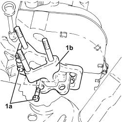
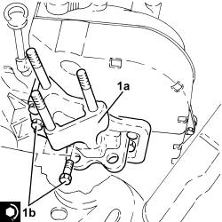

1008a46 cam shaft left rigid mount - r r
- Path
- Procedures > 10 ENGINE > 1008 POWER UNIT SUPPORTS > 1008A POWER UNIT FASTENINGS > 1008a46 cam shaft left rigid mount - r r
- Kind
- repair procedure (removal / refitting; the operation number is the code)
- Applies to
- engines: 1.4 8v; all production periods
- Interactive page
- https://sloeber94.github.io/elrnDB-fDbl/en/#/2584157
Applies to: engines: 1.4 8v; all production periods
 Removing
Removing
 Refitting
RefittingProceed with the removal
Op. 7055B54 PROTECTION/GUARD UNDER ENGINE - R.R.
Op. 1008B10 FLEXIBLE MOUNTING FOR POWER UNIT FRONT SUPPORT (TIMING SIDE) - REPLACE
1. Undo the bolts (1a) and remove the power unit timing side rigid support (1b).

Applies to: engines: 1.4 8v; all production periods
Refitting
Removing1. Place the power unit timing side rigid support (1a) in its housing and secure it tightening the bolts (1b) to the recommended torque.
Fastening | Component | dia | Value (daNm) | |
|---|---|---|---|---|
1b | Bolt | RIGID ENGINE MOUNT, TIMING SIDE | M8 | (Engine crankcase side) 2.0 - 2.4 |
Fastening | Component | dia | Value (daNm) | |
|---|---|---|---|---|
1b | Bolt | RIGID ENGINE MOUNT, TIMING SIDE | M10 | (Engine crankcase side) 5.4 - 6.6 |

Applies to: engines: 1.4 8v; all production periods
Proceed with the refitting
Op. 1008B10 FLEXIBLE MOUNTING FOR POWER UNIT FRONT SUPPORT (TIMING SIDE) - REPLACE
Topics linked from this page (2)
- 1008b10 power unit front mount (timing side) flexible block - replace
- 7055B54 under-engine guard - r r
Topics that link to this page (29)
- S11 ENGINE'BUZZING
- 0510A20 timing gear with belt drive - check - carry out operation with cam cover(s) removed and tappets adjusted
- 0510A30 cam lift - check with cam cover(s) removed
- 1016B10 single cylinder head extension - change gasket
- 1016B20 lh cylinder head extension - replace gasket
- 1016B24 rh cylinder head extension - replace gasket
- 1016C10 cylinder head - r + r and replace gasket
- 1020B10 cover of timing system with chain drive - r + r replace oil seal and gasket
- 1020D12 front crank shaft oil seal cover - r + r and replace seals
- 1020D14 front crank shaft oil seal cover - r + r and replace seals for versions with oil pump on crank shaft, timing side
- 1020D18 front crank shaft cover oil seal - replace
- 1032B10 toothed timing belt - r + r for timing adjustment or replacement
- 1032B14 toothed timing belt - r + r for timing adjustment or replacement versions with air conditioner
- 1032B46 toothed drive pulley - r + r
- 1032B52 toothed driven pulley (one) - r + r
- 1032B60 bolt pulley - r r
- 1032B62 TIMING BELT TOOTHED PULLEY - R.R. FOR VERSIONS WITH AIR CONDITIONING
- 1032C18 mobile timing system tensioner - r + r for 24 valve engines
- 1032D12 timing system protective cover(s) - r + r
- 1032D34 timing system guard assemblies - r + r
- 1036B10 overhead camshaft - r r on vehicle
- 1036G10 camshaft controlling exhaust valves in top head - r + r with top head removed - includes replacement of top head
- 1036G20 camshaft controlling intake valves in top head - r + r with top head removed - includes replacement of top head if necessary
- 1036C39 PHASE TRANSFORMER ON INLET CAMSHAFT IN CYLINDER HEAD - R.R.
- 1060E10 pressure pump - r r
- 1060E30 pressure pump pulley - r r
- 1060G22 cam angle sensor - r r
- 1060G90 diesel injection wiring harness - r r
- 1088C10 water pump - r + r